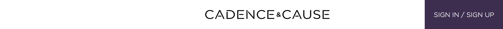
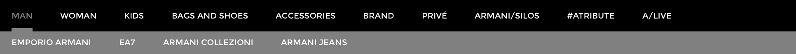
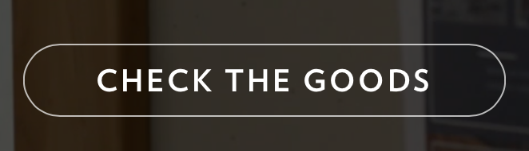
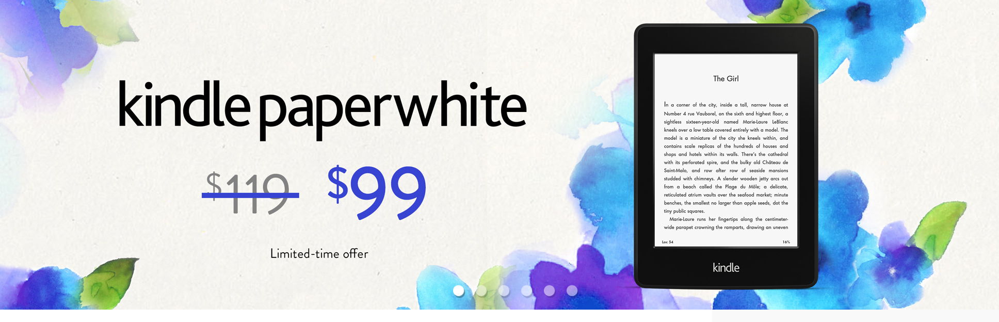
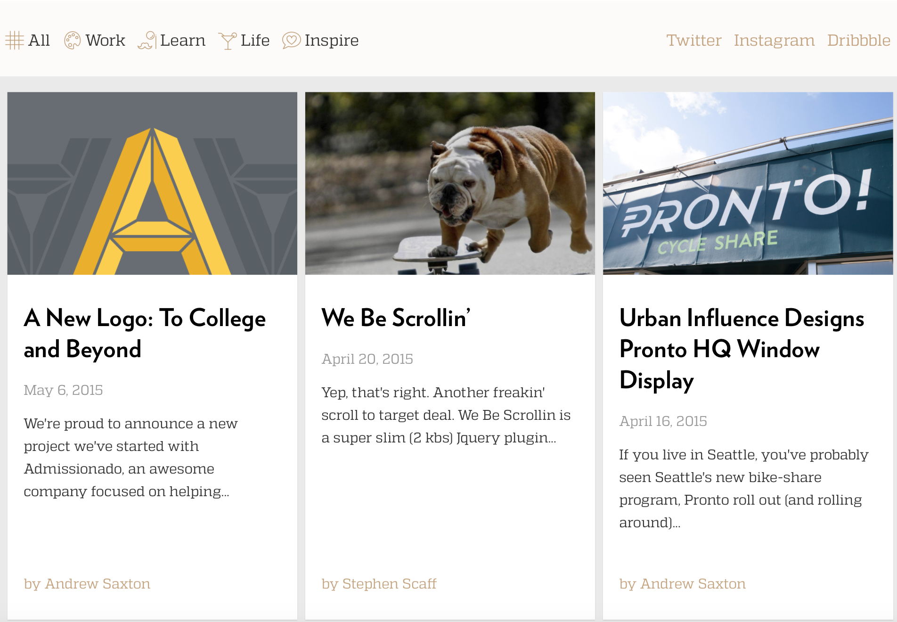
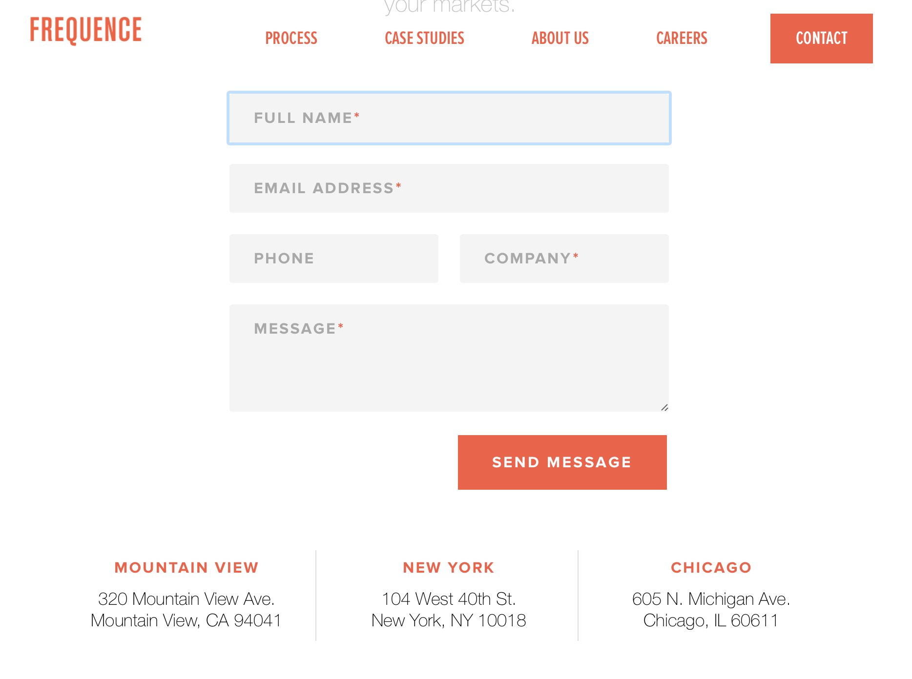
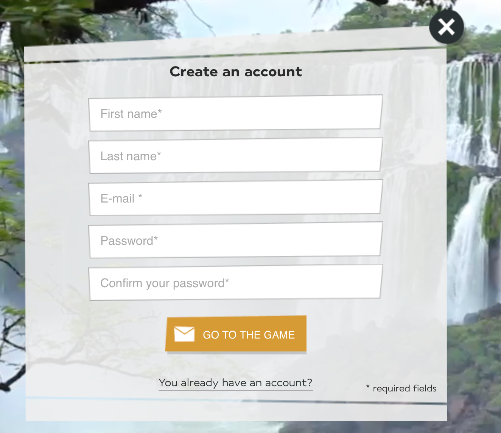
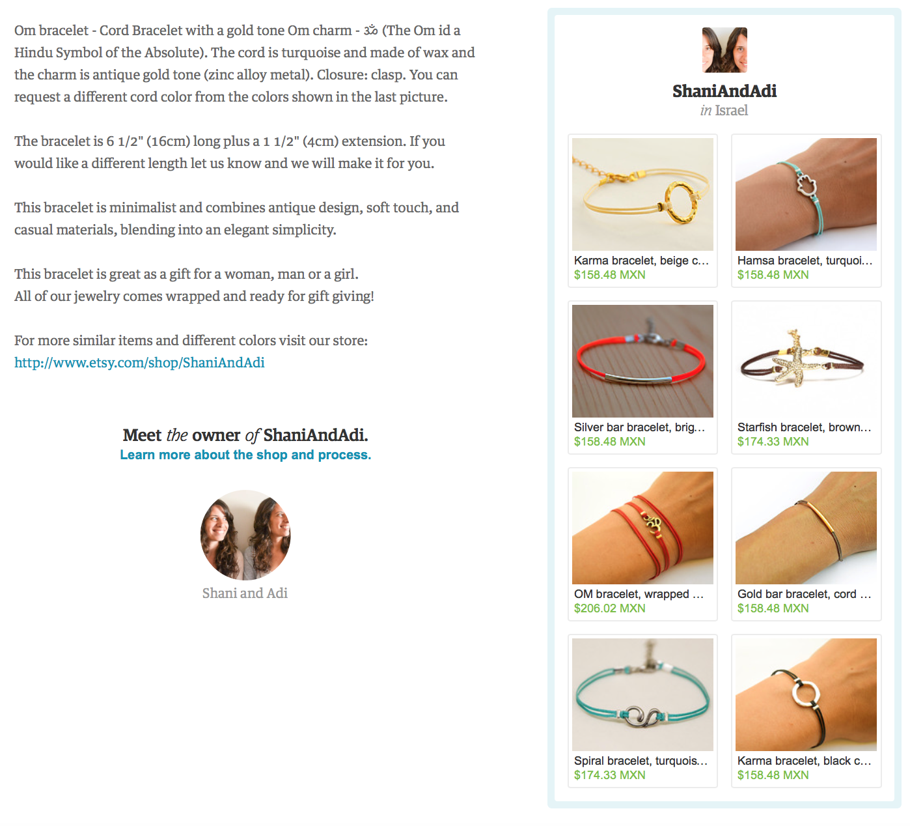
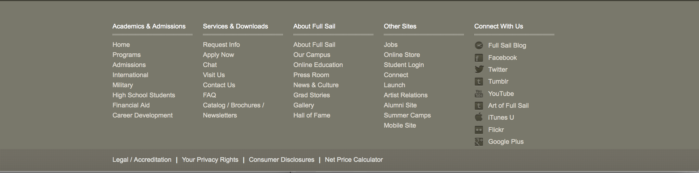
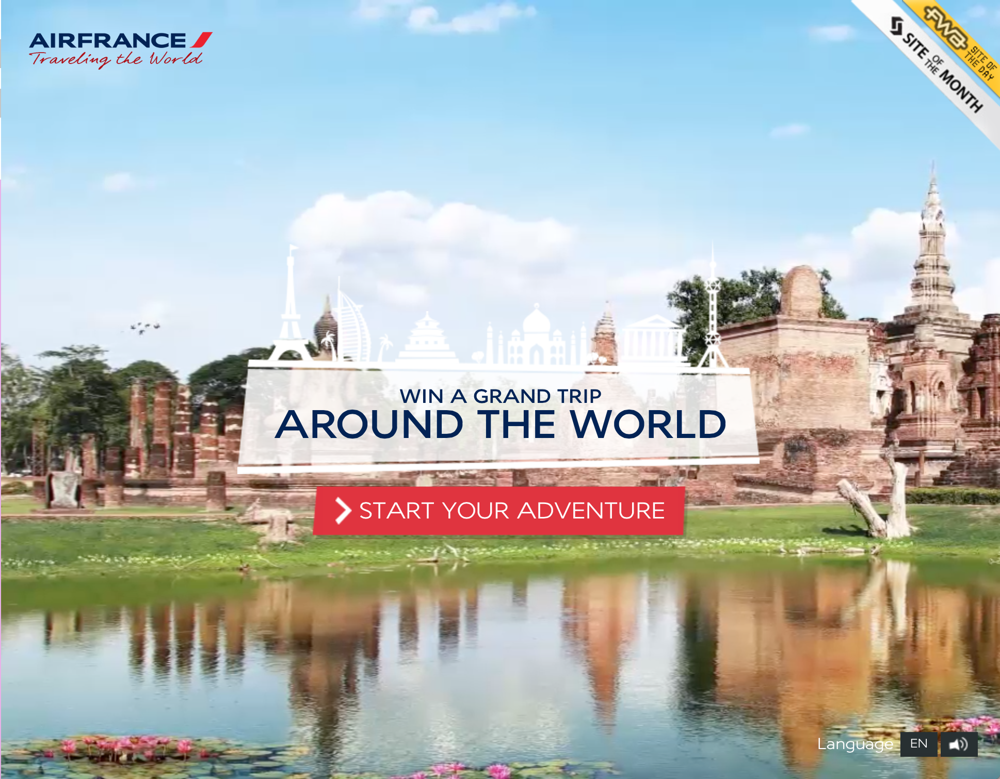

Header
Cadenceandcause.com
Target Audience :
This header is for an audience that is looking for something simple and modern that trust the brand by its logo.
Client's Goals | User's Needs :
The clients goal is to give the user an easy access to sign in and login right from the header. Showing in a simple but modern way the products logo.
Critique:
In my opinion, I like the Cadence and cause header for a logo that it's not very complex but the context will give live to the site. The contrast is dark and light but not heavy. I would like to use this header for a web page where the nav bar is on the side and fixed to the page.
Navigation
Armani.com
Target Audience :
The navigation bar from Armani, it targets an audience that is into fashion and design they want to see the context while they browse thru different categories the brand has to offer.
Client's Goals | User's Needs :
The client wants a navigation bar that won't obstruct the view of the main content but at the same time giving easy access to the sub-menus.
Critique:
In my opinion, I like the armani.com nav bar because it's very simple and clean it doesn't interfere with the main content. The font is easy to read using all capitals and a contrast between white, black and gray.
Button
UrbanInfluence.com
Target Audience :
Like all buttons, users need the to confirm a registration form or move to another part of the site, in this case to check the products the brand has to offer.
Client's Goals | User's Needs :
Clients goal is to make the button and information appealing to the user so they would want to click and check the products.
Critique:
I loved this button because it's clear what the action is. It interacts very nice with content that its behind do, to the background being translucent.
Features
Amazon.com
Target Audience :
When a client enters a website, and they want to know the special prices, offers or what's new with the website they look for the features section.
Client's Goals | User's Needs :
The client wants a way to advertise their new products or offers in a way that is eye-catching to the user.
Critique:
I liked this featured piece because it is eye catching it changes showing all the feature item in a slow way, showing the user in what slide he is on. The image of the product uses the whole feature box.
Blog
UrbanInfluence.com
Target Audience :
To an audience that is interested in regular updates from the site they are visiting, with different topics they can choose.
Client's Goals | User's Needs :
A client that wants a space to give their users regular updates. In The website and social networks. Publishing a picture with the date and a story.
Critique:
I love the icons to choose the subject the user is interested. I liked the colors their light, but you still see them very good, and the font is nice. I also liked the layout that each post has. I would use a layout like this one for a project with different topics and stories.
Contact
Frequence.com
Target Audience :
This contact form is for users that need to leave their information with a specific question.
Client's Goals | User's Needs :
When the client needs a way to answer their users questions, who is asking them and their contact information with a message.
Critique:
I liked the contact form from frequence because it looks simple and trustworthy for the user to leave their information. I like the contrast between orange and gray, and the text is very readable.
Registration
Airfrance.com
Target Audience :
This registration form is design for users that need to create an account with their e- mail and a password.
Client's Goals | User's Needs :
Design for clients that need their users to have an account to interact further with the site.
Critique:
I loved this website. The create account form is very creative and nice the background has a very low opacity so you can still see the presentation in the back. The color in the text is a light gray, so it creates a nice balance with the background that is white.
Aside
Etsy.com
Target Audience :
Users that would like to see something extra. In this case similar products.
Client's Goals | User's Needs :
For a client that wants a place to show more or similar products to the user. Giving the user easier access to products he/she might like.
Critique:
I liked this aside of etsy it uses a border that is a nice pale blue the images displayed in thumbnails with a solid border.
Footer
Fullsial.com
Target Audience :
Users that want another option to navigate thru the site. Looking at the map site in a more dynamic way divided into categories.
Client's Goals | User's Needs :
Give the users another option to navigate thru the site. Put legal or copyright information.
Critique:
I liked the contrast with white; the font family and size are very nice and easy to read. The structure of the content makes the user find what he/she is looking for quicker.
Home Page
Airfrance.com
Target Audience :
Users who love to travel or is planning an upcoming trip.
Client's Goals | User's Needs :
A client who want's to sell airplane tickets or trips.
Critique:
I just loved this site it makes me want to travel the whole world. I love that they show like a 360 of parts of the world with the different sounds. They use airframe colors, but they contrast very nice with the background.